6. 计算机视觉复习
6.1. 引言
6.1.1. 视觉感认知：Gestalt Laws（格式塔法则）
– 理解每条意思，能简单解释
接近性原则（Proximity）： 靠近彼此的元素更可能被视为属于同一组，而远离的元素则被视为不相关。
相似性原则（Similarity）： 人们倾向于将相似的元素视为属于同一组或整体。相似性可以涉及形状、颜色、大小等方面的相似性。
**同命运原则（Common Fate）：**人们倾向于将同时移动或具有相似运动方向的元素视为一个整体或一个组。
对称性原则（Symmetry）： 对称的元素倾向于被视为属于同一组，人们更容易将对称图形视为整体。
连续性原则（Continuity）： 人们倾向于将连续的元素组合在一起，形成更为流畅的整体，而不是将它们分开。
闭合性原则（Closure）： 人们倾向于在不完整的图形中看到一个封闭的整体，即使其中的一些部分并没有直接呈现。
6.2. 边缘
6.2.1. 模板卷积
– 给一个图像与一个模板，会计算卷积结果
6.2.2. Origin of Edges
– 四种最主要的不连续(discontinuity) 、
表面法向不连续，深度不连续，表面颜色不连续，光照面间断不连续
6.2.3. 边缘检测的基本思想
函数导数反映图像灰度变化显著程度——边缘所在位置：一阶导数的局部极大值&二阶导 数的过零点
6.2.4. 基于一阶的边缘检测（有哪些）
Roberts交叉算子，Sobel算子，Prewitt算子(运算较快)
6.2.5. 基于二阶的边缘检测（有哪些）
– Laplacian算子
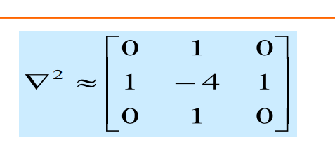
– LoG算子 （Marr&Hildreth算子）：为什么要加G
高斯平滑（Gaussian Smoothing）： 首先，使用高斯滤波器对原始图像进行平滑。高斯滤波有助于去除图像中的噪声，同时模糊图像。这一步的目的是为了减少边缘检测时的干扰和提高边缘的定位准确性。
拉普拉斯算子（Laplacian Operator）： 在经过高斯平滑的图像上应用拉普拉斯算子，也称为二阶微分算子。拉普拉斯算子可以提高图像中灰度的变化率，因此在边缘处会产生较大的响应。这一步的结果是得到图像的二阶导数。
零交叉检测： 通过检测拉普拉斯响应的零交叉点，确定边缘的位置。零交叉点表示图像中的灰度变化方向，从而确定边缘的位置。
6.2.6. Canny边缘检测
– 理解Canny边缘检测方法，能写出该方法的关键步 骤，能说出其中两个阈值的意义
用高斯滤波器平滑图像．
用一阶偏导有限差分计算梯度幅值和方向.
对梯度幅值进行非极大值抑制（NMS） ．
用双阈值算法检测和连接边缘．
连接高阈值边缘图，出现断点时，在低阈值边缘图 中的8邻点域搜寻边缘点。
6.3. 曲线
6.3.1. Hough变换
– 用来解决什么问题？ 形状检测技术
– 基本思想 图像中每一点对参数组合进行表决，赢得多数 票的参数 组合为胜者（结果
适当量化参数空间（栅格化）——问题 □ 对每一个待拟合的点，其满足的参数方程对应的累加器+1 □ 所有累加器中最大值对应的参数组合即为模型参数
– 会用图示解释Hough变换做直线检测的具体原理

– 对于直线检测或圆的检测，能写出算法基本步骤


– 参数空间离散化，精度低或高分别有什么不好
低精度（较大的离散化步长）：
优点： 计算速度快，占用的内存较少。
缺点： 精度较低，可能会导致在参数空间中的峰值不准确，容易错过一些细小或弱边缘。检测结果可能不够精细。
高精度（较小的离散化步长）：
优点： 能够提供更高的精度，对于复杂的图像或要求高精度的应用更为适用。
缺点： 计算开销增加，需要更多的内存。此外，可能对噪声敏感，容易受到图像中的小变化或噪声的干扰。
6.4. 局部特征 Local Feature
6.4.1. Harris角点检测
– 知道basic idea/基本思想
使用一个固定窗口在图像上进行任意方向上的滑动 比较滑动前与滑动后窗口中的像素灰度变化程度 如果存在任意方向上的滑动，都有着较大灰度变化，那么我们可以认为该窗口中存在角点。
– 会推导这条公式：
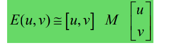


– 理解M矩阵的$\lambda_{max}$、$\lambda_{min}$两个特征值代表的含义；其与Harris角点关系 是什么？
$λ_{max}$表示结构张量在梯度变化最大的方向上的变化程度。在角点处，图像中的梯度变化会在多个方向上都很大，因此 $λ_{max}$ 通常较大。
$λ_{min}$（最小特征值）：* 表示结构张量在梯度变化最小的方向上的变化程度。在角点处，$\lambda_{min}$ 也会相对较大，因为角点是图像中灰度变化最强烈的地方
特征值就是主分量上的方差
>特征值都比较大时，即窗口中含有角点
>特征值一个较大，一个较小，窗口中含有边缘
>特征值都比较小，窗口处在平坦区域
– 知道Harris对旋转不变性、灰度仿射不变性、尺度不变性的定性判断
对旋转、亮度变化、噪声、视点变换不敏感，对尺度敏感。
6.4.2. SIFT描述子的计算
– Full version的基本计算步骤
1.构建尺度空间，建立图像金字塔。 2.寻找极值点(相邻的26个点中最大/最小值) 3.去除不好的特征点:使用近似的harris corner，检测关键点的位置和尺度，并且去除边缘响应点 4.用16x16的窗口放在特征点附近 5.将16x16分成16个4x4的窗口 6.计算窗口中每个像素的边的方向(梯度角减去90度) 7.丢掉方向能量小的边(使用阈值)用直方图描述结果 8.将每个小窗口中的所有的方向离散成8个方向，一共16x8=128个
– 为什么使用梯度信息？好处？
因为梯度信息可以表示边缘信息，并且在光照变化时有抵抗能力
– 如何实现旋转不变的？
旋转的时候每一个关键点周围的店也会跟着旋转，不会影响SIFT向量。所以SIFT对旋 转不敏感(在计算grid里面的梯度bin前需要旋转到主方向，因此有了一定的旋转不变性)
6.4.3. 大致理解实现尺度不变的原理（需要自己总结）
尺度不变:金字塔模型，对每一种尺度都能进行检测，所以具有尺度不变性(通过前一步算LoG 得到的尺度来确定计算feature的范围，所以不同尺度能得到类似的feature)
6.5. 图像拼接 Image Stitching
6.5.1. 图像拼接
– 实现两张图像自动拼接的几个基本步骤
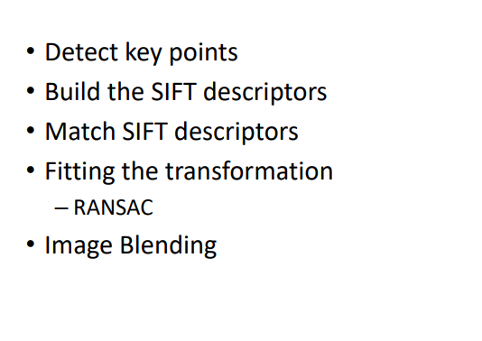
6.5.2. 图象金字塔
– 如何理解拉普拉斯金字塔？从频率角度看，是什么？
– 如何理解高斯金字塔？从尺度(scale)角度看，是什么？
6.5.3. RANSAC
– Generally speaking, 可以解决什么样的问题？
是一种用于拟合模型并从数据中去除离群值的迭代方法。RANSAC的主要应用是解决由噪声干扰引起的模型拟合问题
– 理解其过程的核心思想 – 优点？
“inliers”(内群)数据可以通过几组模型的参数来叙述其分布，而，”outliers”(离群)数据则是不 适合模型化的数据。 数据会受到噪声的影响，噪声指的是离群，例如从极端的噪声或错误解释有关数据的测量或不正 确的假设。 RANSAC假定，给定一组(通常很小)的内存，存在一个程序，可以估算最适用于这一组数据模 型的参数。
.优点:是大范围模型匹配问题的一个普遍意义上的方法，且运用简单，计算快。
– 基本步骤（迭代Loop）
随机选择一组种子点作为变换估计的基础(例如，一组匹配)
根据种子组计算变换
找到变换的内点
如果内点数足够大，重新计算所有内层变换的最小二乘估计
– outlier点比例给定的情况下，则k次采样（迭代）后计算成功的概率是 ？
“内点”在数据中的占比为t $$ P = 1-(1-t^n)^k $$ – 思考：与Hough变换有什么共同之处？
鲁棒性： RANSAC和Hough变换都是鲁棒的估计方法，对于包含噪声或异常值的数据具有较好的适应性。它们能够忽略数据中的离群点，从而提高对模型参数的估计准确性。
参数估计： 两者都用于估计模型的参数。RANSAC主要用于拟合模型，例如拟合线、平面等，而Hough变换则广泛用于检测图像中的直线、圆或其他几何形状。
迭代过程： RANSAC和Hough变换都是基于迭代的方法。RANSAC通过随机抽样数据点进行迭代，通过不断优化模型参数，最终获得对数据拟合较好的模型。Hough变换通过在参数空间中累加投票来识别图像中的几何形状。
6.6. 主元分析与人脸识别
6.6.1. 主元分析(PCA)
– PCA方法的基本思想是最小化什么？
构造线性变换使得数据可以用更低的维度来表示。
– 什么样的数据用PCA会比较有效？
PCA在处理高维数据时比较有效，特别是当数据中存在相关性或者冗余信息时。它常被用于降维，去除数据中的噪声或冗余信息，以便更好地表示数据的结构。
– 下面这个优化目标函数的推导: $a_1^TSa_1$

– 关于选取多少个特征向量构建子空间，常用什么方法？
选取特征向量的方法： 通常通过保留数据中方差的百分比或者根据累积的特征值进行选择。一种常见的方法是选择保留总方差的95%或者90%的特征向量，以达到降维的目的。
– PCA分析与DCT离散余弦变换的相同之处？不同之处？
与DCT的相同和不同之处： 相同之处在于它们都是通过变换的方式对数据进行表示，从而实现降维。不同之处在于PCA是通过最大化方差来找到主要特征，而DCT是一种基于余弦变换的变换方法，主要用于信号和图像的压缩。
– 怎么理解降维之后，还能重构再升维?
降维后重构再升维： 在PCA中，降维实际上是通过选取较少的主成分来实现的，这些主成分构成了新的子空间。在需要重构原始数据时，可以通过将降维后的数据投影回原始的高维空间，从而实现升维。这一过程中可能会损失一些信息，但在某些应用中，损失的信息可以忽略不计。
6.6.2. Eigenface
– “Eigenface”是什么？ Eigenface人脸识别方法的基本步骤

– 会写基于Eigenface的人脸重构公式（线性加权和）
– 理解利用人脸重构进行人脸检测的原理。如果一幅白噪声图像用Eigenface 去重构，预计结果会是怎么样？原因是？
– 思考：Eigen-X应用过程重点需要注意什么？
在建模时适用于具有明显结构和模式的数据，而不适用于随机或白噪声型数据。
选取主特征
– 除上课提到的人脸、手型、人体形状之外，试举例，你觉得哪些数据可能 比较适合用EigenX方法去建模？
声音信号、文本数据、生物信息数据。
6.7. 光流 Optical flow
光流解决的是什么问题？
Recover image motion at each pixel from optical flow 从光流中恢复每个像素的图像运动，
• 光流三个基本假设是什么？
brightness constancy亮度恒常，目标像素强度在相邻帧不发生变化
spatial coherence空间一致，相邻像素具有相似运动
small motion细微运动，相邻帧时间间隔短
• 对于以下一个点的约束等式，会自己推导：
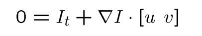
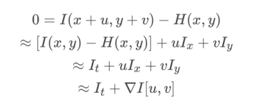
• 哪些位置的光流比较可靠？为什么？
纹理复杂区域，因为梯度比较大，且方向不同，求出来的特征值比较大。
边缘、梯度大像素值变化比较明显
强对比度
非遮挡区域
稳定背景
6.8. 物体识别
6.8.1. Visual Recognition
– 基本任务大概可以分为哪些？
分类图像或视频
检测定位对象
估计语义和几何属性
分类人类活动和事件
– 都有哪些挑战因素？
对象种类多
视角变换、光线变化、尺度变化、物体形变、物体遮挡、背景凌乱、内部类别多样
– 理解Generalization error中模型带来的Bias与variance，以及模型复杂度跟overfit, underfit的关系。
偏差和方差的权衡，太少模型参数——较大偏差，太多模型参数——过大方差，对数据过敏感。
泛化误差：
偏差：所有训练集的平均模型与真实模型的差异
方差：不同训练集的模型之间的差异
overfit 过拟合，较大的方差，较小偏差，训练集低错误率，测试集高错误率
underfit 欠拟合，较小的方差，较高的偏差，训练集、测试集高错误率
6.8.2. 基于卷积全局优化的物体分类
– 会简单推导并理解以下公式含义 (SM = softmax)
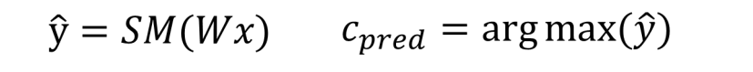
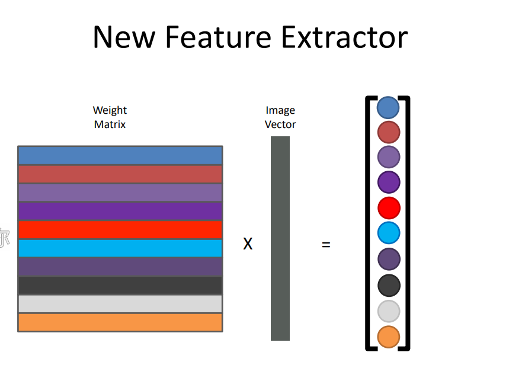
– Softmax的作用？
Softmax函数常用于多类别分类问题的输出层。
它将模型的原始输出（未经缩放的分数）转换为表示每个类别概率的概率分布。01之间，总和为1.
– W矩阵是什么组成的？含义是什么？
权重矩阵，
6.9. 深度学习
6.9.1. 深度学习
– 怎么理解被称为end-to-end的学习？
raw inputs to predictions，传统方法通常包含都多个阶段的处理和特征工程，而深度模型能够直接从原始数据输入中自动学习到复杂的映射关系，并直接输出最终的预测结果
– 神经网络的学习/训练，数学上本质是求解神经网络的什么？
神经元连接之间的权重参数
– 会写出基于梯度下降法的学习框架
定义模型： 首先，需要定义深度学习模型的结构，包括网络层、激活函数、损失函数等。这构成了模型的前向传播。
初始化参数： 对模型的参数进行初始化，通常使用随机初始化的方法。
前向传播： 将输入数据通过定义的模型进行前向传播，得到模型的输出。
计算损失： 将模型的输出与真实标签进行比较，计算损失（误差）。损失函数通常表示模型输出与真实标签之间的差异。
反向传播： 利用链式法则计算损失对模型参数的梯度。这一步是梯度下降法的核心，通过反向传播算法计算出每个参数对损失的影响程度。
更新参数： 使用梯度下降法更新模型的参数，减小损失。常见的更新规则包括随机梯度下降（SGD）、批量梯度下降（BGD）和小批量梯度下降（mini-batch GD）。
迭代： 重复执行前向传播、损失计算、反向传播和参数更新的步骤，直到模型收敛或达到预定的迭代次数。
6.9.2. • BP反向传播算法
– BP算法作用是计算什么？理解“梯度下降法”与BP算法的关系
计算神经网络中每个参数对损失函数的梯度，从而实现模型参数的更新。具体来说，BP算法用于计算网络中的权重和偏置的梯度，以最小化损失函数。这一过程是深度学习中基于梯度下降法进行参数优化的核心。
– 给一个计算公式，会画出计算图，并根据给定的初始值计算梯度反向传 播的过程(正向与反向)
6.9.3. • CNN
– 与全连接网络相比，CNN在哪几个方面做了重要改变？为什么这么改？
局部感受野： 在CNN中，卷积层使用局部感受野（局部区域的权重共享），而不是全连接网络中每个神经元与所有输入相连接。这样的设计减少了模型的参数数量，降低了计算复杂度。
参数共享： CNN中的卷积层使用参数共享，即卷积核的权重在整个输入空间内被共享。这允许模型对局部特征的变化具有平移不变性，同时进一步减少了模型的参数量。
池化层： CNN引入了池化层，用于减小特征图的空间尺寸，提高计算效率，并使模型对于输入的小的位置变化更加鲁棒。池化层通常使用最大池化或平均池化。
层级结构： CNN通常采用层级结构，包含卷积层、池化层和全连接层。这种层级结构使得网络能够逐渐提取抽象的特征，从而更好地捕捉数据中的层次化结构。
– 卷积层的作用是什么？卷积层主要利用哪两个技巧减少模型参数
作用： 卷积层用于从输入数据中提取局部特征。卷积操作通过卷积核在输入上滑动，对每个局部感受野进行加权求和，从而生成输出特征图。
参数共享： 卷积层中的参数共享是通过使用相同的卷积核在整个输入空间上进行卷积操作实现的。这使得模型对于局部特征的变化具有平移不变性，同时减少了参数数量。
稀疏连接： 卷积层中的卷积核通常具有较小的尺寸，导致连接是稀疏的。这样，每个神经元只与输入的一小部分区域相连接，从而减少了连接的数量。
– 自己会计算第一个卷积层的权重(weight)数量（注意: 权重数与连接数的 差别
C×K×K 是每个卷积核的权重数量，M 是输入通道数
6.9.4. 关于训练
– batch技巧是指什么? 怎么理解该方法？
Batch技巧通常指的是在训练深度学习模型时采用小批量（batch）数据进行梯度下降的方法。相对于全批量梯度下降，使用小批量的数据进行训练有助于提高训练的效率和稳定性。具体来说，将训练数据分成若干个小批量，每次使用一个小批量数据来更新模型参数。
– batch normalization的初衷是为了改变优化过程中的什么？
缓解梯度消失和梯度爆炸问题： Batch Normalization通过对每一层的输入进行归一化，使得每一层的激活值分布在接近零均值、单位方差的范围内，有助于缓解梯度消失和梯度爆炸问题。
加速训练收敛： BN允许使用更大的学习率，从而加速训练过程，因为归一化层可以减少梯度下降中的步幅。
提高模型的泛化能力： BN在训练过程中引入了一些噪声，有一定的正则化效果，有助于提高模型的泛化能力。
– 基于Momentum的梯度下降法，其主要思想是什么？希望解决优化过程 中的什么问题。
其主要思想是引入动量（Momentum），使得更新方向不仅取决于当前梯度，还受到历史梯度的影响。
梯度更新公式加一个动量项
加速收敛： 动量项可以加速梯度下降的收敛过程，特别是在存在大的平坦区域或者弯曲的谷底时。
减小震荡： 动量项可以减小参数更新的震荡，有助于更稳定地朝着最优点移动。
6.9.5. 关于注意力机制
– Self-attention机制主要是对什么样信息进行建模？
向量集合，自然语言句子编码向量、声音信号序列、二维、三维关系图
Self-attention机制主要是用来建模序列（如自然语言句子、时间序列等）中不同位置之间的关系，使得模型能够在处理序列数据时更好地捕捉长距离依赖关系。它可以在一个序列中的每个位置上分别关注其他位置的信息，从而进行全局建模。
– 理解self-attention机制中的 q/k/v想代表的含义/意思？
q（query）表示当前位置的输入在不同位置上的关注度（重要性）。
k（key）表示其他位置的输入对当前位置的影响程度。
v（value）表示其他位置的输入对当前位置的值的贡献。
– 为什么要加位置编码（positional encoding）
Self-attention机制无法直接捕捉输入序列中的位置信息，因为它对输入进行的是全局关注。为了引入位置信息，需要加入位置编码（positional encoding）。位置编码是通过将位置信息编码成特定的向量，然后与输入序列相加，使得模型能够区分不同位置的信息。常见的位置编码包括正弦和余弦函数的组合。
– Self-attention机制与CNN卷积机制的关系？
Self-attention机制和CNN卷积机制都用于处理序列数据。它们的不同之处在于关注的范围。Self-attention允许每个位置关注序列中所有其他位置，而CNN卷积操作通常采用局部感受野，只关注输入序列中的一小部分区域。Self-attention具有更强的全局建模能力，适用于长距离依赖关系的任务，而CNN适用于局部模式的提取。
– Self-attention机制与循环神经网络模型（ RNN ）的关系？
Self-attention机制和循环神经网络（RNN）都用于处理序列数据，但它们的计算方式和建模能力有所不同。RNN通过循环连接在序列上建模依赖关系，而Self-attention可以直接在整个序列上进行全局建模，捕捉长距离依赖。Self-attention在某些任务上能够更好地捕捉全局信息，而RNN在某些任务上可能受制于梯度消失问题。
– Self-attention机制与图神经网络模型（GNN）的关系
Self-attention机制和图神经网络（GNN）都可以用于建模图结构数据。Self-attention可以被用于图结构中节点之间的关系建模，对节点进行全局关注。然而，GNN更专门设计用于处理图结构，通过消息传递机制在图上进行局部信息聚合。GNN通常更适用于处理节点之间的局部连接，而Self-attention更适用于节点之间的全局关联
6.10. 相机模型
6.10.1. 理解：景深/光圈/焦距/视场的关系
– 光圈对景深(Depth of Field)的影响？理解原理，会画图解释
– 焦距对视场(Field of View)的影响？理解原理，会画图解释
6.10.2. 理想的针孔相机模型
基本投影公式，并能画图说明，会推导出公式，并写出齐次坐标形式 下的透视投影公式(矩阵形式的)
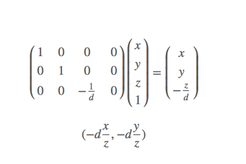
– 有哪几个内参（不包括畸变参数），会写内参矩阵
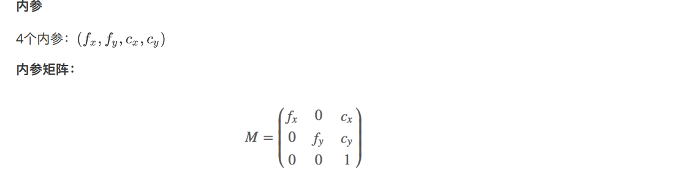
– 投影变化：保角？保距？保平行？保共线？
6.10.3. 齐次坐标系
– 齐次坐标有什么好处？并能举例说明
– 齐次坐标与笛卡尔坐标之间会换算
– 给一个刚体变换 Rx + t，会推导出齐次坐标的矩阵乘形式
6.10.4. 畸变
– 径向畸变与切向畸变各是什么原因引起的？
径向畸变：由于透镜的几何形状不完美或安装位置引起的畸变
切向畸变：透镜平面和成像平面不平行引起的畸变
– 径向畸变常见的有哪两种？
枕形畸变/桶形畸变
6.10.5. 相机外参
– 外参有哪几个？分别代表什么含义？齐次坐标 下的外参矩阵会写、会推导。
三个轴的旋转参数$\omega、\delta、\theta$，把每个轴的3*3旋转矩阵进行组合，得到集合三个轴旋转信息R；
T的三个轴位移参数（Tx，Ty，Tz）
6.10.6. 四个坐标系
– 知道相机模型成像过程中涉及的四个坐标系
世界坐标系、相机坐标系、成像坐标系、像素坐标系
– 会画图展示内参、外参、畸变参数在成像各阶 段中的角色（从真实的世界坐标到图像坐标的 过程
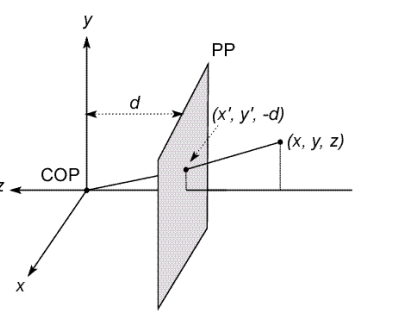
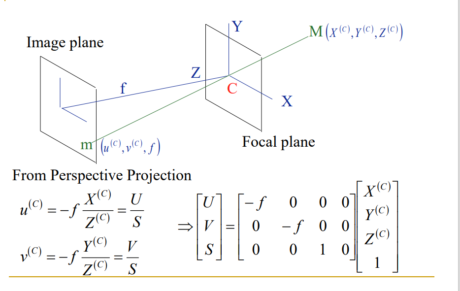
6.11. 相机定标 Camera Calibration
6.11.1. 基于Homography的相机定标
– 相机定标 Camera Calibration的基本思路或思想 ？
相机定标的基本思路是通过已知几何形状的物体（通常是棋盘格）来观察相机的成像过程，从而确定相机的内部参数和外部参数。这些参数包括焦距、主点坐标、畸变系数等，用于将图像中的像素坐标映射到实际世界坐标。
– 有哪些优点？
准确度： 相机定标可以提高相机成像的准确性，避免畸变等问题。
校正： 定标可以对相机进行校正，使其更符合几何模型。
重建： 定标后的相机可以用于三维重建等应用。
– 基本过程（4个步骤）？
采集图像： 拍摄包含已知几何形状（如棋盘格）的图像。
检测特征点： 在图像中检测已知几何形状的特征点，如角点。
求解相机参数： 利用检测到的特征点和其对应的实际世界坐标，通过数学模型求解相机的内部和外部参数。
评估和校正： 评估定标结果，并对相机进行校正，得到更准确的成像。
– Homography矩阵有几个自由度？求解需要至少几 个特征点？
Homography矩阵是一个3x3的矩阵，共有8个自由度。然而，由于矩阵的尺度是任意的，所以实际上只有8个参数是独立的。因此，为了求解Homography矩阵，至少需要8个特征点及其对应的匹配点。
– 根据未知参数的数量，会简单估算需要最少拍几 张定标图片
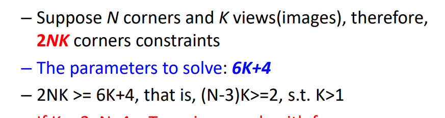
6.12. 立体视觉
6.12.1. 立体视觉的三角测量基本原理
– 会画“视差disparity”的那张图，并自己会辅助线推导深度的计算公 式。
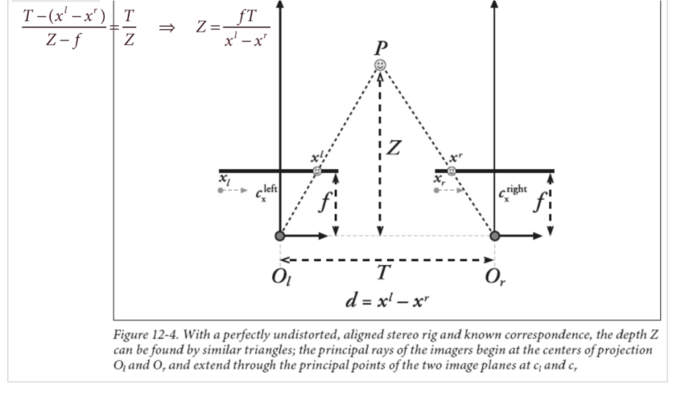
– 根据计算公式，会分析深度分辨率跟哪几个因素有关系？会画图解 释
6.12.2. • 立体视觉的步骤
– 简述四个基本步骤（ review: How to Do Stereo）： Undistortion、 Rectification、Correspondence、Reprojection或triangulation
消除畸变、矫正相机、找对应特征、三角测量
– Rectification这个步骤的目的是什么？如果不做Rectification，有什 么不好？
– 怎么理解：通过Stereo matching时，可将原来的2D匹配问题，转化 为1D匹配问题
6.13. 结构光三维成像原理
6.13.1. 结构光成像系统的组成
结构光投影仪、CCD相机、深度信息重建系统
6.13.2. 利用结构光获取三维数据的基本原理
– 会画图，会做辅助线推导公式
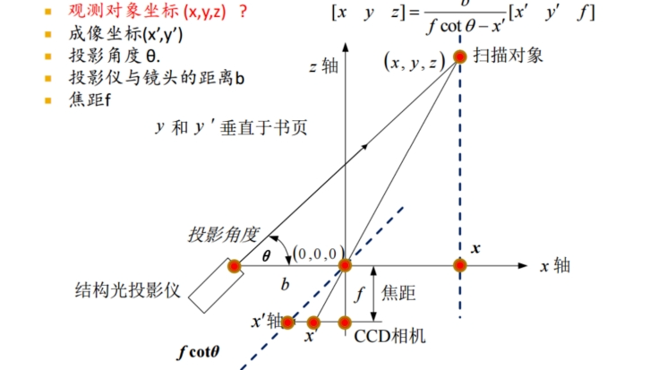
– 搞清楚哪些已知，哪些未知
6.13.3. ICP算法
– 该算法用于解决什么问题？
迭代最近点方法，用于多个摄像机的配准问题，即把多个扫描结果拼接在一起形成对扫描对象的完整描述。
– 算法的基本步骤
给定两个三维点集X、Y，将Y配准到X
建立两个扫描结果之间的对应关系
通过迭代获得一个仿射变换函数能够描述1中对应点之间的变换关系
对Y应用上一步求得的仿射变换，更新Y
两个结果中距离最近的点作为对应点，计算对应点的距离如果大于阈值，重复2，3，否则停止计算。